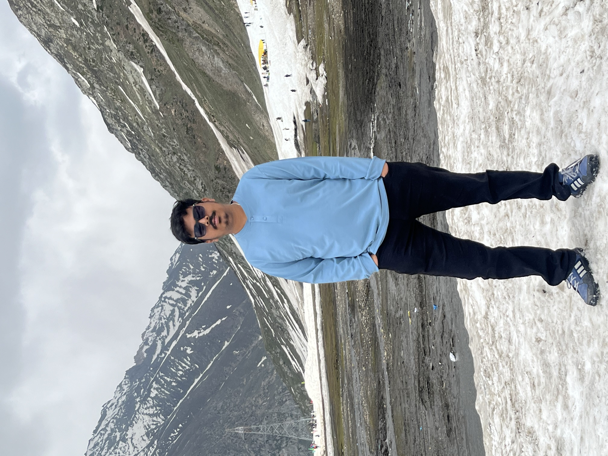

Kanav Gathe || Fullstack Developer & DevOps Enthusiast
Hi, I'm Kanav Gathe! I recently completed my Bachelor's in Engineering in Computer Science and Engineering in July 2023. I have a strong passion for MERN Fullstack development and DevOps, and I'm currently focusing on honing my skills in React and Express while working as a freelance web developer.
I create simple, functional websites for those in need and aspire to secure a role in DevOps or Fullstack development. Explore my projects and get in touch to learn more about my work and how I can contribute to your team.
During my academic journey, I developed a solid foundation in various programming languages and technologies, which fueled my interest in fullstack development. I enjoy the process of bringing a concept to life through code, ensuring that each project is both user-friendly and efficient.
In addition to my technical skills, I value continuous learning and professional growth. I've completed several online courses and certifications to stay updated with the latest industry trends and best practices. My dedication to learning and improving is a testament to my commitment to delivering high-quality work.
In my freelance work, I have successfully collaborated with clients to understand their needs and deliver solutions that exceed their expectations. I pride myself on my ability to communicate effectively and work collaboratively, which helps build strong, productive relationships with clients and team members alike.
When I'm not coding, I enjoy exploring new technologies, contributing to open-source projects, and participating in hackathons. These activities allow me to challenge myself and stay engaged with the tech community.
I'm excited about the opportunities in DevOps and fullstack development and am eager to apply my skills and knowledge to contribute to innovative projects. If you're looking for a dedicated and passionate developer to join your team or work on your next project, please feel free to reach out.
Education
Bachelor of Engineering
Computer Science & Engineering (CSE)
2019 – 2023
Diciplines
Front-End
Back-End
Django
Linux
ShellScripting
React.js
Contact
Feel free to reach out for projects, collaborations, or just to say hello! Currently seeking new opportunities.